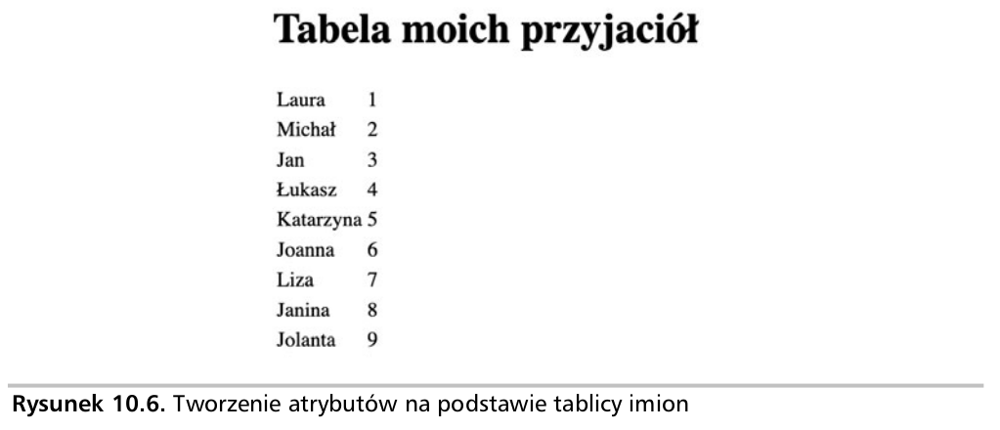

Tworzenie atrybutów niestandardowych: z wykorzystaniem przedstawionej tutaj tablicy imion (zobacz rysunek 10.6) zamieszczony nieco dalej kod HTML będzie uaktualniał element HTML-a i dodawał nowy kod na podstawie danych w tablicy. Elementy tablicy zostaną więc wyświetlone na stronie jako kod HTML. Użytkownik może następnie kliknąć element strony, co spowoduje wyświetlenie wartości atrybutu danego elementu.

Od tego momentu prezentowany w tekście kod HTML będzie stawał się coraz
bardziej skomplikowany, więc skoncentrujemy się na testowaniu kodu
JavaScript. Dlatego też szablony HTML będą dostarczane tylko tam, gdzie to
konieczne. Możesz wykorzystać zamieszczony tutaj szablon HTML i utworzony
przez siebie kod umieścić w elemencie <script>.
Wykonaj wymienione tutaj kroki:
build(), ponieważ będzie odpowiadała za
przygotowanie treści strony. W tej funkcji zostanie utworzona tabela
HTML.
<tr>
zdefiniuj atrybut o nazwie data-row w głównym elemencie row, który
będzie zawierał wartość indeksu elementu tablicy. Ponadto dodaj w
elemencie atrybut o nazwie data-name, który będzie zawierał tekstowe
dane wyjściowe.
<tr>
dodaj atrybut onclick w celu wywołania funkcji
getData()
przekazującej do parametru funkcji obiekt bieżącego elementu jako this.
getData(), wywoływaną po kliknięciu
elementu ><tr>. Ta funkcja ma użyć metody
getAttribute()
do pobrania wartości atrybutu row i treści przeznaczonej do
wyświetlenia. Następnie umieść te dane w oddzielnych zmiennych.